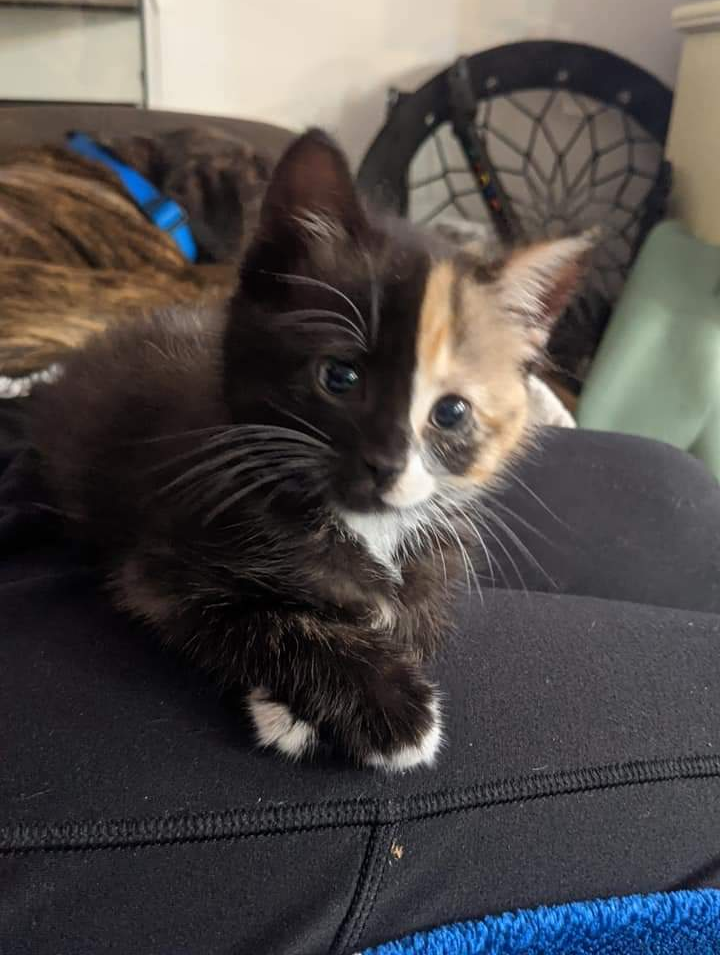

Welcome to Pawsitive Rescue.
Here at Pawsitive Rescue, we feel that every pet, whether big or small, deserves a loving home. We rescue and rehabilitate stray and abandoned pets in our community. If you have found a lost pet we are the go-to resource for humane and gentle care.
Our Mission
Our mission is to rescue, rehabilitate, and rehome pets in need. We devote our time and resources to ensuring quality care for animals of all shapes and sizes.
Featured Pet of the Month

Harvey (Female, 3 months old) was brought to us as part of a litter of three. She had lost feeling in her hind legs and could not walk properly. After several months of careful rehabilitation, she can run and jump to her heart's content.